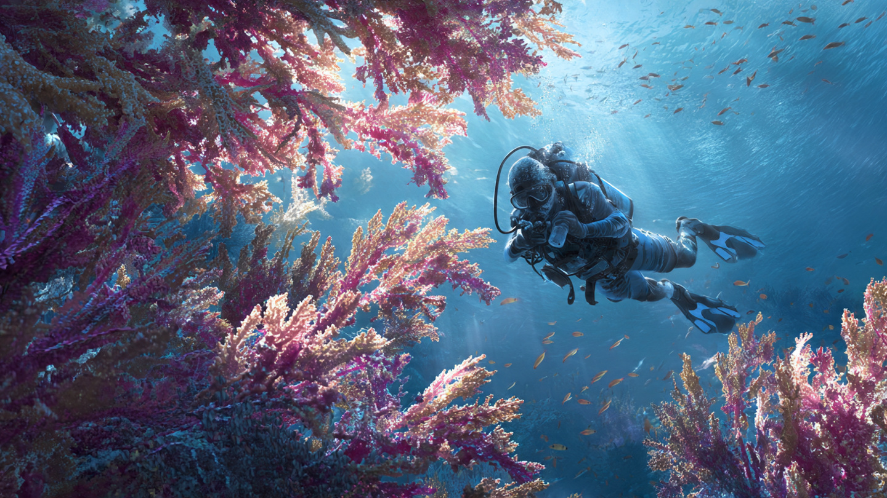
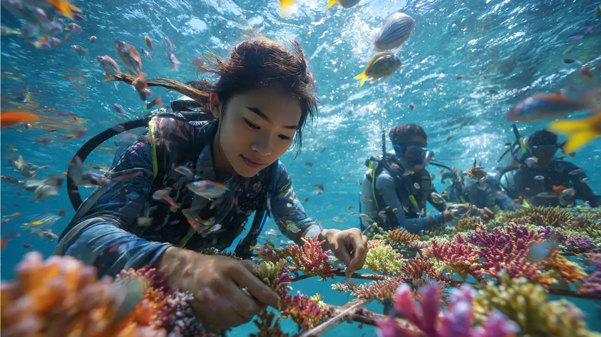
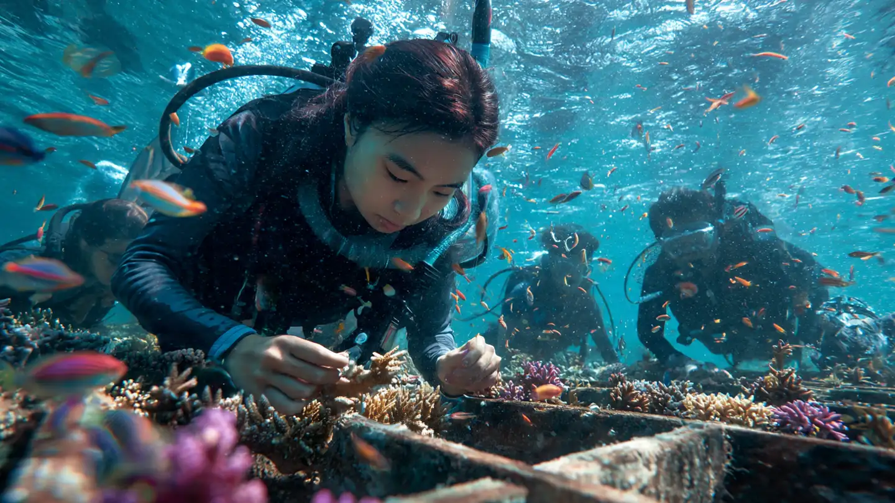
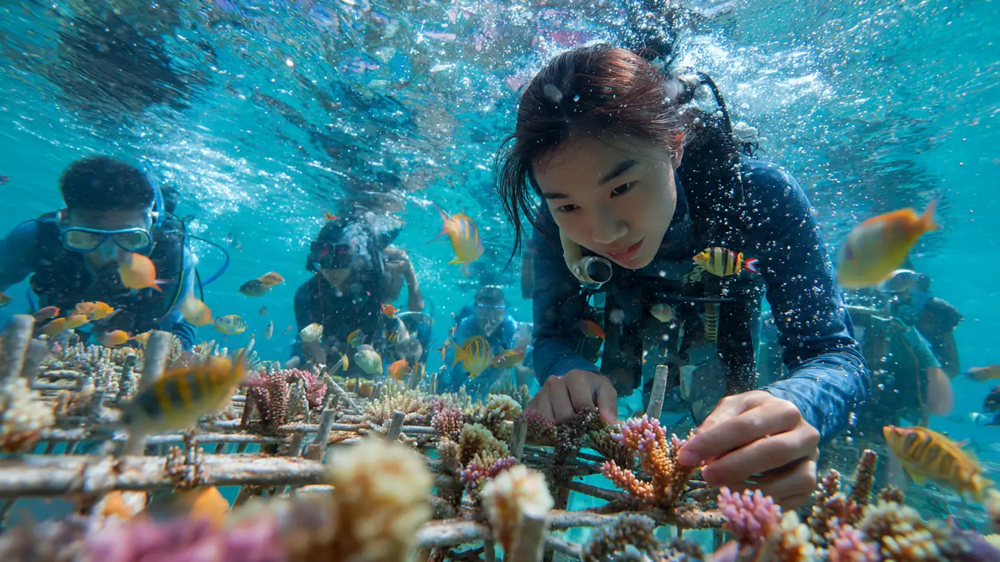
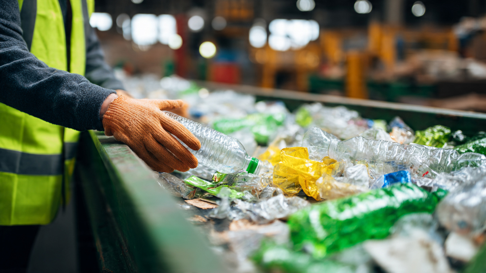

Jane Doe
Bersama komunitas lokal, kegiatan ini berfokus pada penanaman bibit karang dan edukasi tentang pentingnya menjaga ekosistem laut. Terumbu karang adalah rumah bagi ribuan spesies laut yang kini terancam oleh polusi dan perubahan iklim. Melalui aksi nyata ini, kita berupaya mengembalikan keindahan dan keberlanjutan laut Raja Ampat.
Komunitas bersama relawan akan menanam bibit karang di area yang rusak sekaligus memberikan edukasi kepada masyarakat dan wisatawan tentang peran penting terumbu karang. Upaya ini diharapkan menciptakan dampak positif jangka panjang bagi ekosistem dan nelayan lokal.
Menanam karang hanyalah satu langkah awal. Untuk memastikan keberhasilan, dibutuhkan tindak lanjut dan kebersamaan. Komunitas akan mengadakan monitoring rutin dan melibatkan generasi muda dalam menjaga kelestarian laut Raja Ampat.



Event rehabilitasi terumbu karang di Raja Ampat ini dirancang bukan hanya sebagai aksi penanaman bibit karang, tetapi juga sebagai rangkaian aktivitas yang menyatukan ilmu, aksi nyata, dan keterlibatan komunitas. Setiap peserta tidak hanya diajak turun langsung ke laut untuk menanam karang, tetapi juga mendapatkan edukasi mendalam mengenai peran penting ekosistem karang sebagai penopang kehidupan laut.
Aktivitas inti mencakup penyelaman bersama instruktur lokal untuk menanam bibit karang pada area yang rusak, pemantauan pertumbuhan karang dari waktu ke waktu, serta pengenalan teknik sederhana yang bisa dilakukan oleh masyarakat dan wisatawan untuk menjaga ekosistem laut tetap sehat. Selain itu, tersedia sesi workshop interaktif yang membahas dampak polusi plastik, perubahan iklim, dan solusi berkelanjutan yang bisa diterapkan dalam kehidupan sehari-hari.
Event ini juga memiliki fitur sosial dan edukatif yang memperkuat rasa kebersamaan. Peserta akan mendapatkan uang yang langsung masuk ke saldo Natura mereka, serta badge digital sebagai bentuk apresiasi atas partisipasi mereka. Data dampak kegiatan, seperti jumlah bibit yang ditanam, luas area laut yang dipulihkan, hingga jumlah relawan yang terlibat, akan ditampilkan secara transparan di dashboard komunitas sehingga semua orang bisa melihat perkembangan nyata dari aksi yang dilakukan.
Selain itu, terdapat fitur dokumentasi visual berupa galeri foto dan video yang menampilkan proses kegiatan, sehingga pengalaman dan inspirasi dari Raja Ampat bisa tersebar lebih luas. Dengan adanya leaderboard, setiap relawan maupun kelompok komunitas bisa melihat kontribusi mereka dibandingkan dengan komunitas lain di seluruh Indonesia, menciptakan semangat kolaborasi sekaligus kompetisi sehat.
Melalui kombinasi antara aksi lapangan, edukasi, dokumentasi, dan gamifikasi, kegiatan rehabilitasi ini diharapkan tidak hanya memperbaiki kerusakan ekosistem laut, tetapi juga menumbuhkan kesadaran, tanggung jawab, dan kebanggaan bersama dalam menjaga kekayaan laut Indonesia.
Salut buat semua relawan yang peduli dengan laut. Semoga karangnya cepat tumbuh!
Keren sekali! Terumbu karang itu penting banget untuk kehidupan laut. Semoga makin banyak orang terinspirasi ikut.
